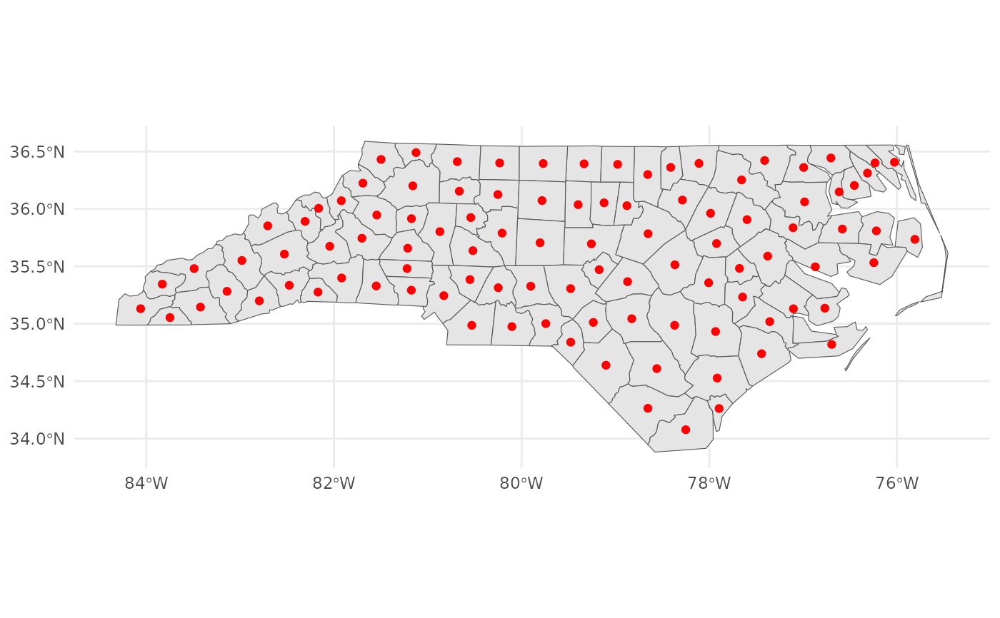

Replaces the geometry of a simple feature (sf) polygon object with its
centroid point. Optionally renames the geometry column of the modified sf
object.
Arguments
- sf_object
A simple feature (
sf) object with polygon or multipolygon geometry. Cannot beNULL.- rename
Logical. Whether to rename the geometry column. Defaults to
FALSE.- new_name
Character. New name for the geometry column. Must be a single, non-empty character string if
rename = TRUE. Defaults toNULL.
Value
The modified sf object with its geometry replaced by the centroid
points of the original polygon geometries. If rename = TRUE, the geometry
column is renamed to new_name.
Examples
load_packages(sf, ggplot2, dplyr)
# example data
(nc <- sf::st_read(
dsn = system.file("shape/nc.shp", package = "sf"), quiet = TRUE) %>%
dplyr::select(AREA))
#> Simple feature collection with 100 features and 1 field
#> Geometry type: MULTIPOLYGON
#> Dimension: XY
#> Bounding box: xmin: -84.32385 ymin: 33.88199 xmax: -75.45698 ymax: 36.58965
#> Geodetic CRS: NAD27
#> First 10 features:
#> AREA geometry
#> 1 0.114 MULTIPOLYGON (((-81.47276 3...
#> 2 0.061 MULTIPOLYGON (((-81.23989 3...
#> 3 0.143 MULTIPOLYGON (((-80.45634 3...
#> 4 0.070 MULTIPOLYGON (((-76.00897 3...
#> 5 0.153 MULTIPOLYGON (((-77.21767 3...
#> 6 0.097 MULTIPOLYGON (((-76.74506 3...
#> 7 0.062 MULTIPOLYGON (((-76.00897 3...
#> 8 0.091 MULTIPOLYGON (((-76.56251 3...
#> 9 0.118 MULTIPOLYGON (((-78.30876 3...
#> 10 0.124 MULTIPOLYGON (((-80.02567 3...
# Replace polygon geometry with centroids
(nc_centroid <- polygon_centroid(nc))
#> Simple feature collection with 100 features and 1 field
#> Geometry type: POINT
#> Dimension: XY
#> Bounding box: xmin: -84.05986 ymin: 34.07671 xmax: -75.8095 ymax: 36.49111
#> Geodetic CRS: NAD27
#> First 10 features:
#> AREA geometry
#> 1 0.114 POINT (-81.49823 36.4314)
#> 2 0.061 POINT (-81.12513 36.49111)
#> 3 0.143 POINT (-80.68573 36.41252)
#> 4 0.070 POINT (-76.02719 36.40714)
#> 5 0.153 POINT (-77.41046 36.42236)
#> 6 0.097 POINT (-76.99472 36.36142)
#> 7 0.062 POINT (-76.23402 36.40122)
#> 8 0.091 POINT (-76.70446 36.44428)
#> 9 0.118 POINT (-78.11042 36.39693)
#> 10 0.124 POINT (-80.23429 36.40042)
ggplot2::ggplot() +
ggplot2::geom_sf(data = nc, aes(fill = NULL)) +
ggplot2::geom_sf(data = nc_centroid, colour = "red") +
ggplot2::theme_minimal()

# Rename geometry column
(nc_centroid_renamed <- polygon_centroid(
sf_object = nc, rename = TRUE, new_name = "centroid"))
#> Simple feature collection with 100 features and 1 field
#> Geometry type: POINT
#> Dimension: XY
#> Bounding box: xmin: -84.05986 ymin: 34.07671 xmax: -75.8095 ymax: 36.49111
#> Geodetic CRS: NAD27
#> First 10 features:
#> AREA centroid
#> 1 0.114 POINT (-81.49823 36.4314)
#> 2 0.061 POINT (-81.12513 36.49111)
#> 3 0.143 POINT (-80.68573 36.41252)
#> 4 0.070 POINT (-76.02719 36.40714)
#> 5 0.153 POINT (-77.41046 36.42236)
#> 6 0.097 POINT (-76.99472 36.36142)
#> 7 0.062 POINT (-76.23402 36.40122)
#> 8 0.091 POINT (-76.70446 36.44428)
#> 9 0.118 POINT (-78.11042 36.39693)
#> 10 0.124 POINT (-80.23429 36.40042)
attr(nc, "sf_column")
#> [1] "geometry"
attr(nc_centroid, "sf_column")
#> [1] "geometry"
attr(nc_centroid_renamed, "sf_column")
#> [1] "centroid"